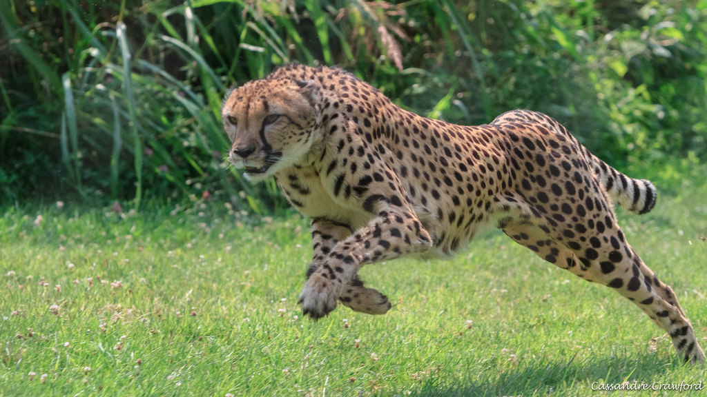
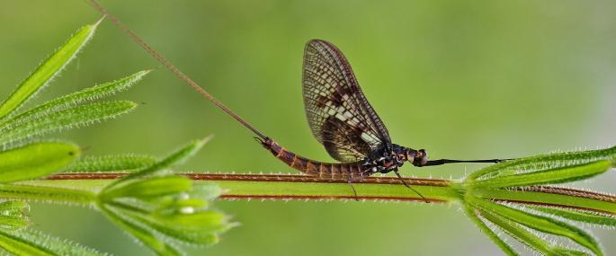

About animals
Nature's record breaker
Some animals are capable of the most amazing feats,moving at extraordinary speed.Other are remarkable for
there size -either weightly giants or so small that it is difficult to imagine how there bodies function.
Some lives to great ages,while other survive for just a few days.
GETTING AROUND
Some predators achieve astonishing speed as they attack there prey.
By contract, the sloth seems to live its life in slow motion.
Fastest

Slowest

WEIGHTY WILDLIFE
Most of the heaviest animals,such as whales and giantshark,
live in the sea,when the ocean water supports there bodies.

JUMPING CREATURES
Craggy mountain terrain allows the snow leopard to leap huge
distance to attack prey.Other animal jump to escape danger.

ANIMAL LIFESPANS
Big animals tend to live longer then smaller ones,and some insects,
such as mayflies,survive for just a few hour as flying adult.
LONGEST LIVES

SHORT LIVE

TALL AND SMALL
The smallest animal are microscopic,such as therotifers that
live mainly in ponds and streams.Other creatures are giant
that tower over all the other animals live alongside them.
TALLEST

SMALLEST